Yu-Ju Tsai (蔡侑儒)
Ph.D. Candidate @ UC Merced
Vision and Learning Lab
Supervisor: Prof. Ming-Hsuan Yang
Biography
I am a fourth-year Ph.D. student in the Vision and Learning Lab at University of California, Merced, under the supervision of Prof. Ming-Hsuan Yang.
Before coming to UC Merced, I received my M.S. degree in Computer Science at National Taiwan University in 2019, supervised by Prof. Ming Ouhyoung and Prof. Yung-Yu Chuang. I received my B.S. degree in Computer Science at National Taiwan University in 2017.
My research interests lie in Computer Vision, with a focus on Computational Photography and Image Editing.
News
- [2026/07] Join Institute of Science Tokyo as a Visiting Scholar!
- [2025/06] One paper accepted to ICCV 2025!
- [2025/05] Award Government Scholarship to Study Abroad (GSSA) by the Ministry of Education from Taiwan.
- [2025/05] Start my Internship at Adobe Research Team!
- [2025/02] Pass my Qualifying Exam!
- [2024/05] Start my Internship at Adobe Research Team!
- [2024/02] One paper accepted to CVPR 2024!
- [2024/01] One paper accepted to ICLR 2024!
Selected Publications
* Indicates Co-First Author
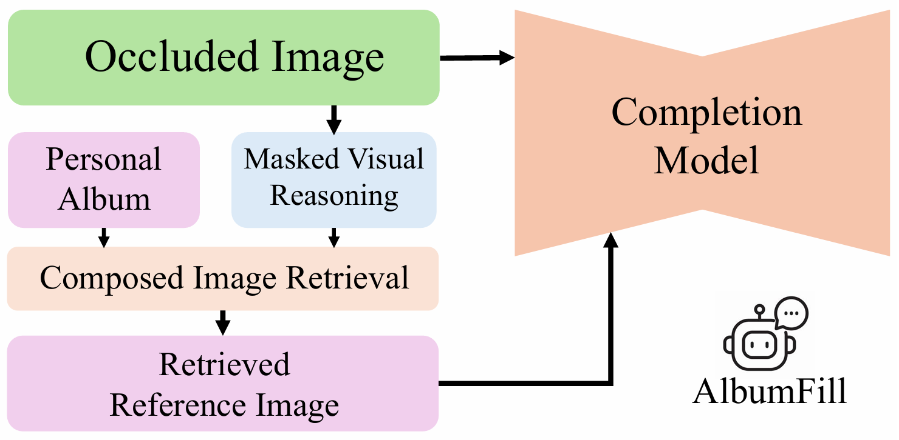
AlbumFill: Album-Guided Reasoning and Retrieval for Personalized Image Completion
Yu-Ju Tsai, Brian Price, Qing Liu, Luis Figueroa, Daniil Pakhomov, Zhihong Ding, Scott Cohen, Ming-Hsuan Yang
Under Review
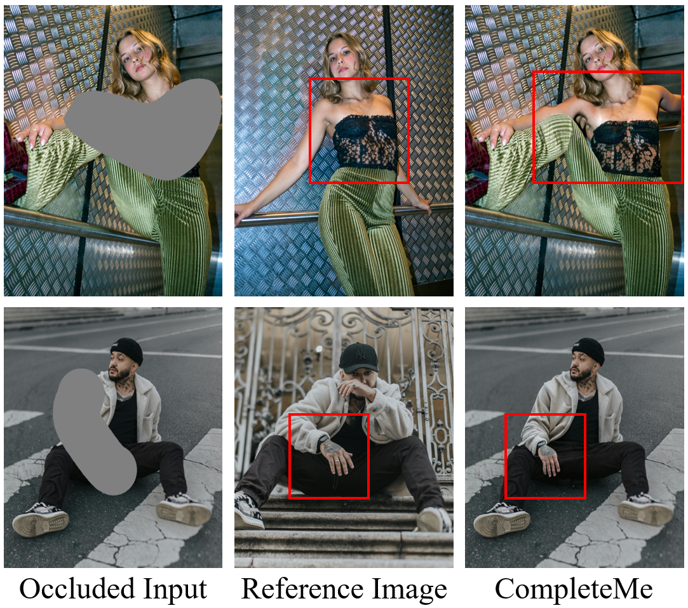
CompleteMe: Reference-based Human Image Completion
Yu-Ju Tsai, Brian Price, Qing Liu, Luis Figueroa, Daniil Pakhomov, Zhihong Ding, Scott Cohen, Ming-Hsuan Yang
ICCV 2025
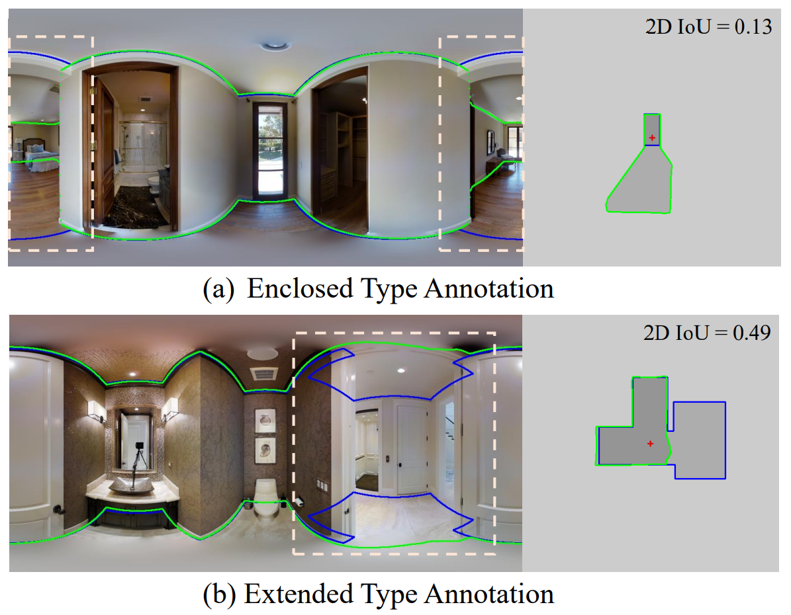
No More Ambiguity in 360◦ Room Layout via Bi-Layout Estimation
Yu-Ju Tsai*, Jin Cheng Jhang*, Jingjing Zheng, Wei Wang, Albert Y. C. Chen, Min Sun, Cheng-Hao Kuo, Ming-Hsuan Yang
CVPR 2024
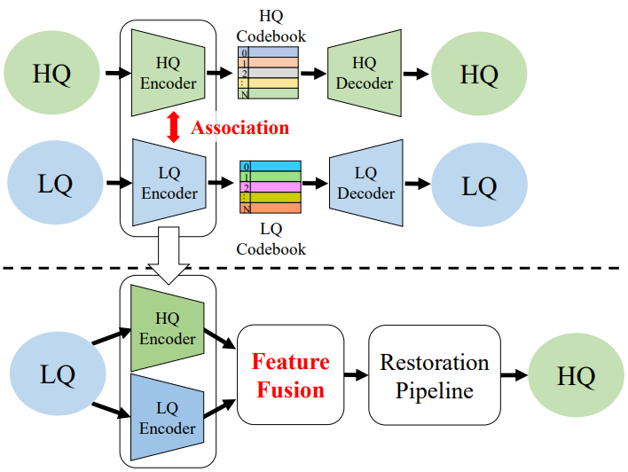
Dual Associated Encoder for Face Restoration
Yu-Ju Tsai, Yu-Lun Liu, Lu Qi, Kelvin C.K. Chan, Ming-Hsuan Yang
ICLR 2024
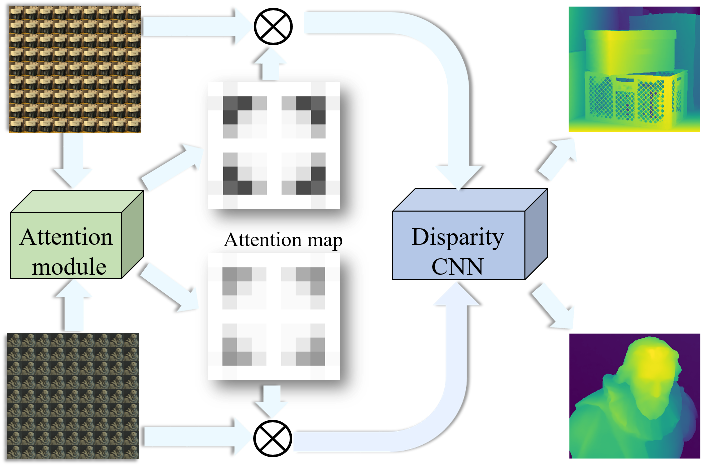
Attention-based View Selection Networks for Light-field Disparity Estimation
Yu-Ju Tsai*, Yu-Lun Liu*, Ming Ouhyoung, Yung-Yu Chuang
AAAI 2020
Awards
- GSSA Scholarship, Taiwan, 2025
- Outstanding Reviewer, ACCV 2022
- Chancellor's Fellowship, UC Merced, 2022
- Presidential Awards, NTU (Top 5%)
Experiences
- Amazon CoRo Team (Intern), 2023
- NTU (Research Assistant), 2019-2022
- HTC Vive (Intern), 2017-2018
Professional Activities
- Conference Reviewer: ACCV, AAAI, CVPR, ECCV, ICCV, ACM MM
- Journal Reviewer: IEEE Transactions on Image Processing (TIP)
- Student Volunteer: SIGGRAPH Asia 2016, 2017, 2019
Full Publication List
Google Scholar2025
CompleteMe: Reference-based Human Image Completion
Yu-Ju Tsai, Brian Price, Qing Liu, Luis Figueroa, Daniil Pakhomov, Zhihong Ding, Scott Cohen, Ming-Hsuan Yang
ICCV 2025
2024
No More Ambiguity in 360◦ Room Layout via Bi-Layout Estimation
Yu-Ju Tsai*, Jin Cheng Jhang*, Jingjing Zheng, Wei Wang, Albert Y. C. Chen, Min Sun, Cheng-Hao Kuo, Ming-Hsuan Yang
CVPR 2024
Dual Associated Encoder for Face Restoration
Yu-Ju Tsai, Yu-Lun Liu, Lu Qi, Kelvin C.K. Chan, Ming-Hsuan Yang
ICLR 2024
2023
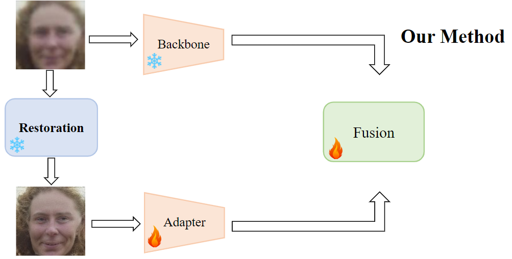
Effective Adapter for Face Recognition in the Wild
Yunhao Liu, Lu Qi, Yu-Ju Tsai, Xiangtai Li, Kelvin C.K. Chan, Ming-Hsuan Yang
Arxiv 2023
2022
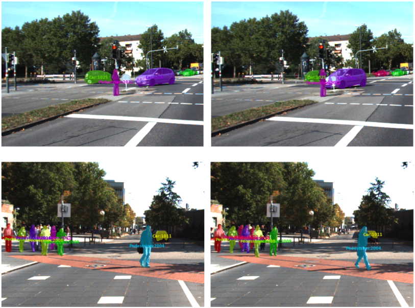
SearchTrack: Multiple Object Tracking with Object-Customized Search and Motion-Aware Features
Zhong-Min Tsai*, Yu-Ju Tsai*, Chien-Yao Wang, Hong-Yuan Liao, Youn-Long Lin, Yung-Yu Chuang
BMVC 2022
2020
Attention-based View Selection Networks for Light-field Disparity Estimation
Yu-Ju Tsai*, Yu-Lun Liu*, Ming Ouhyoung, Yung-Yu Chuang
AAAI 2020
2017
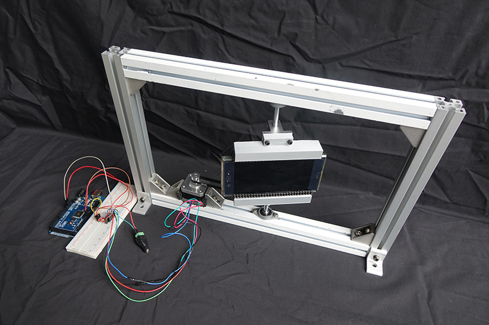
Affordable System for Measuring Motion-to-Photon Latency of Virtual Reality in Mobile Devices
Yu-Ju Tsai, Yu-Xiang Wang, Ming Ouhyoung
ACM SIGGRAPH Asia 2017 Posters
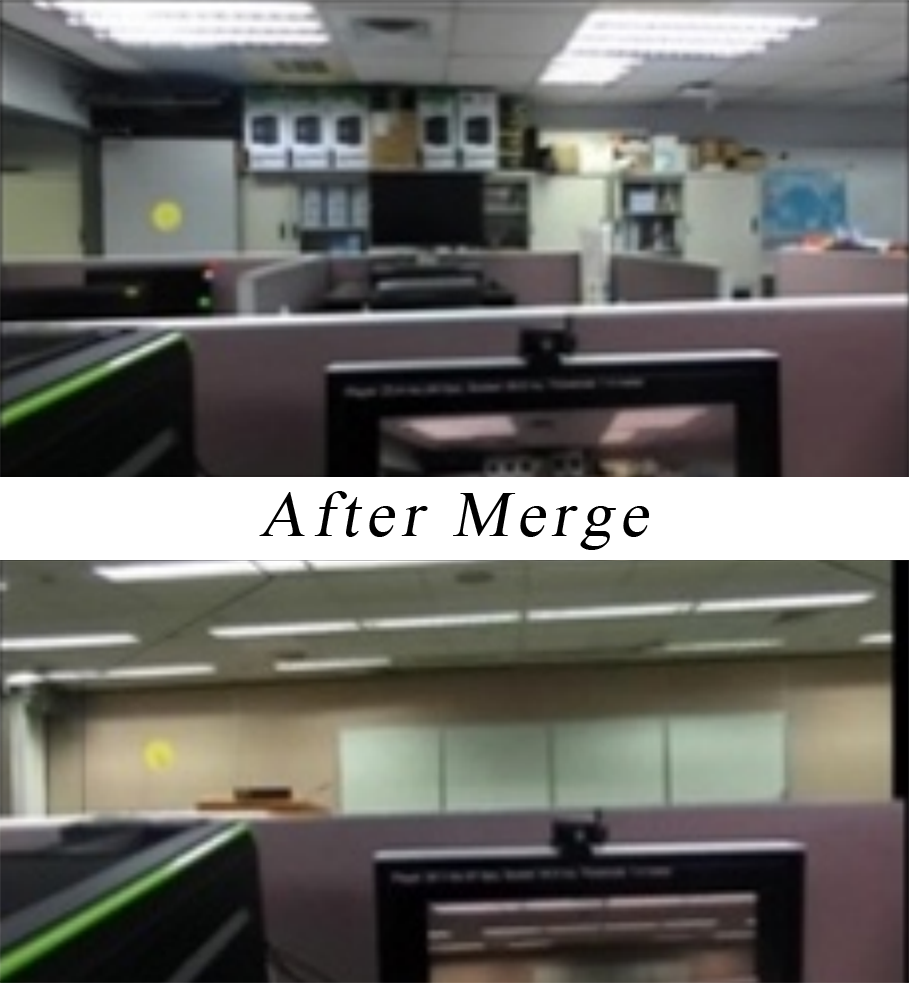
Live Room Merger: A Real-Time Augmented Reality System for Merging Two Room Scenes
Chu-I Chao, Chien-Min Wang, Hsuan-Chi Kuo, Liang-Chi Tseng, Shih-Kai Lin, Yu-Ju Tsai, Ching-Chi Lin, Da-Fang Chang
VRIC 2017
2016
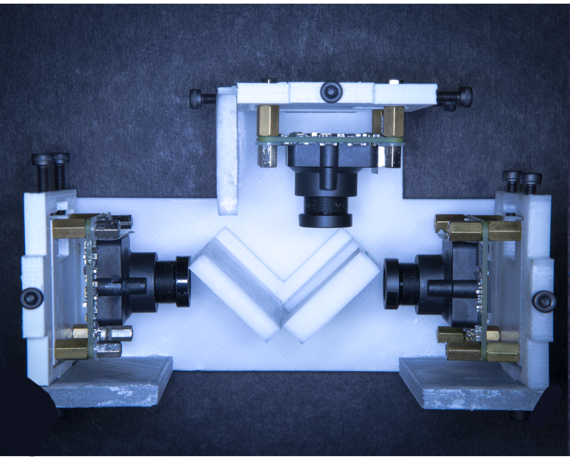
ThirdEye: a coaxial feature tracking system for stereoscopic video see-through augmented reality
Yu-Xiang Wang*, Yu-Ju Tsai*, Yu-Hsuan Huang, Wan-Ling Yang, Tzu-Chieh Yu, Yu-Kai Chiu, Ming Ouhyoung
ACM SIGGRAPH 2016 Posters
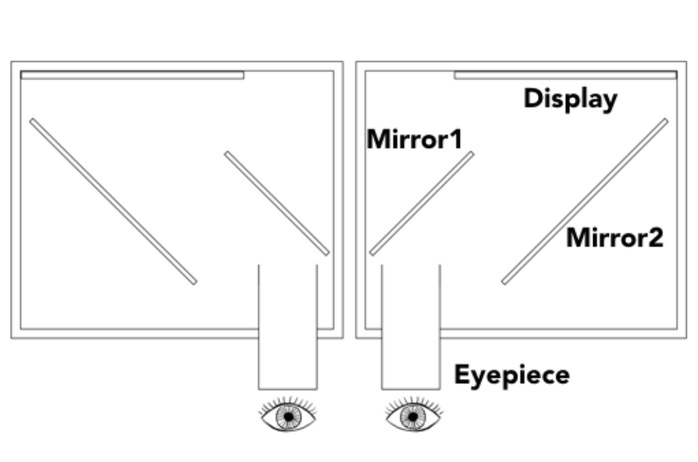
A modified wheatstone-style head-mounted display prototype for narrow field-of-view video see-through augmented reality
Pei-Hsuan Tsai, Yu-Hsuan Huang, Yu-Ju Tsai, Hao-Yu Chang, Masatoshi Chang-Ogimoto, Ming Ouhyoung
ACM SIGGRAPH 2016 Posters